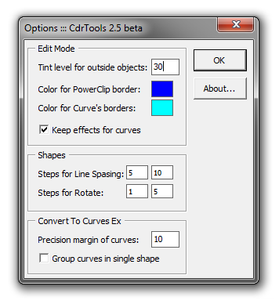
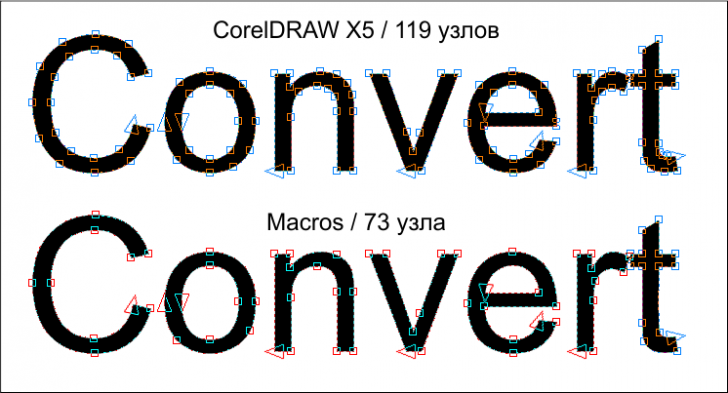

CdrTools - сборник макросов (обсуждение)
Sancho / 27.04.2011, 01:16/00:41
Форум:
Скоро намечается выход новой версии сборника макросов под названием CdrTools. Он будет включать в себя, в большинстве, совершенно бесплатные макросы, а так же несколько платных.
Предлагаю обсудить все функции данного сборника. Понятно ли вам описание, понятно ли для чего они, будите ли использовать в своей каждодневной (или не очень) работе и т.д. и т.п. Возможно у кого то будут какие то предложения.
Прошу высказываться всех, особенно начинающих и среднего уровня пользователей.
А тем временем вынес некоторые параметры в окно настроек:

А так же добавил функцию конвертирования текста в кривые, которая, в отличии от стандартной, умеет следующее:
1. Каждая буква — отдельная кривая (как в Adobe Illustrator).
2. Группирует кривые после конвертации в один объект (для каждого текстового объекта отдельно), тем самым сохраняется структура документа.
3. Позволяет установить степень фильтрации кривых, которая позволяет добиться значительно меньшего количества узлов при сохранении той же формы!

Очень полезная штука - уменьшение количества узлов при сохранении формы!!!
вы - молодец!
sToolsShape.DeleteNoCloseCurves – удаляет незамкнутые кривые в выделенном.
Этот макрос буквально удаляет незамкнутые кривые или как-то замыкает их?
Надо попробовать. Постоянно сталкиваюсь с этой проблемой.